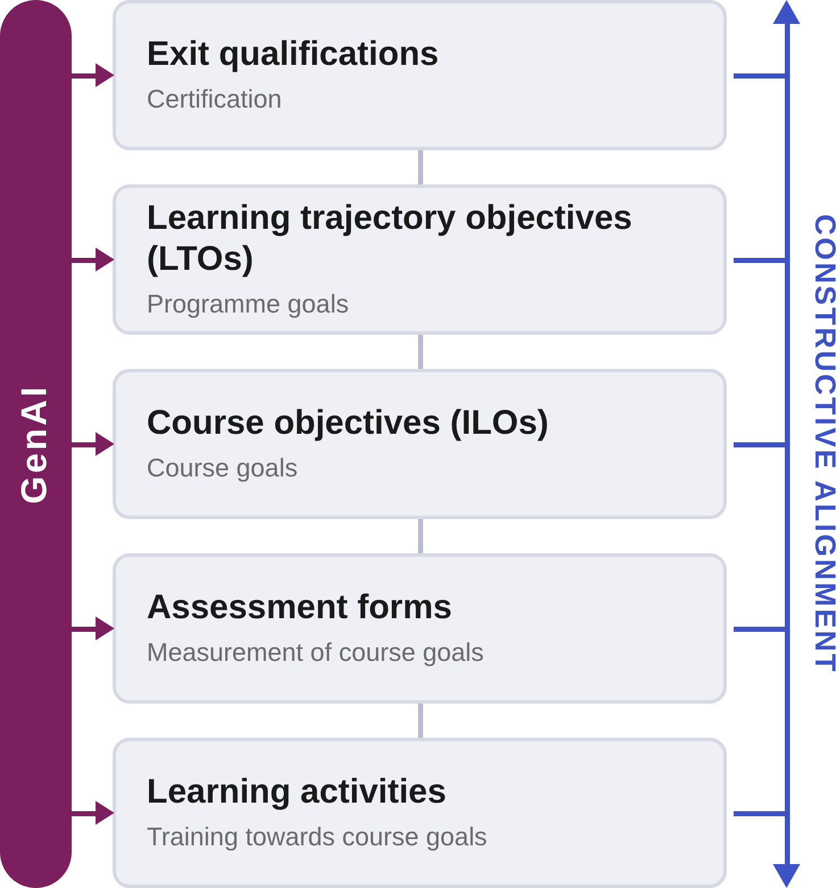
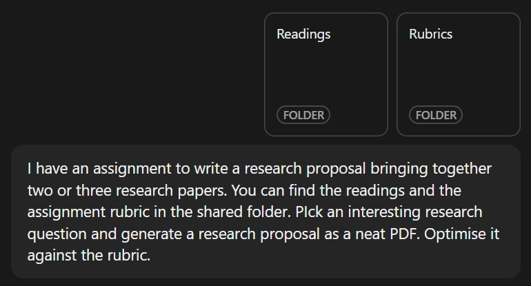
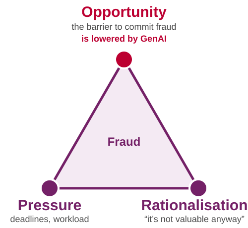
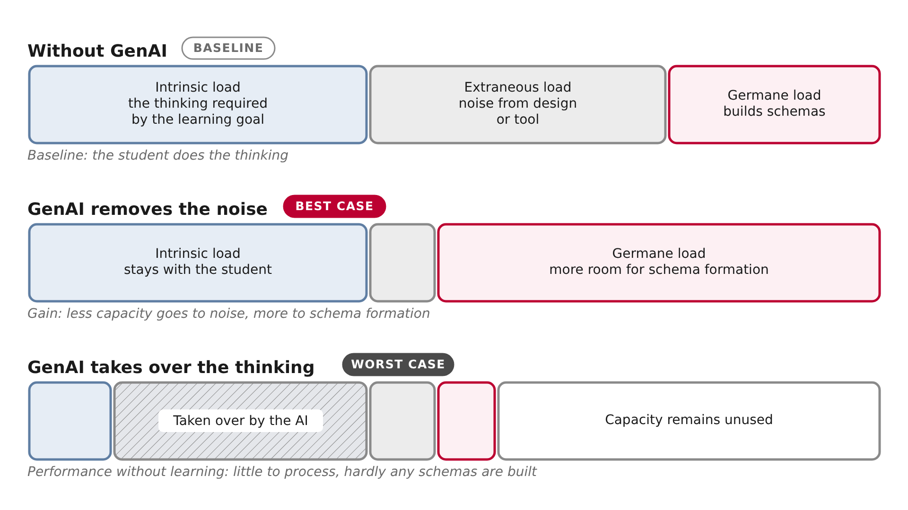

<!DOCTYPE html>
<html lang="en">
<head>
    <meta charset="utf-8" />
    <meta name="viewport" content="width=device-width, initial-scale=1.0, maximum-scale=1.0, user-scalable=no" />

    <title></title>
    <link rel="stylesheet" href="../_shared/1cc66e6465f6/dist/reset.css">
    <link rel="stylesheet" href="../_shared/1cc66e6465f6/dist/reveal.css" />
    <link rel="stylesheet" href="css/slides-extended.css" />
    <link rel="stylesheet" href="../_shared/1cc66e6465f6/dist/theme/white.css" id="theme" />
    <link rel="stylesheet" href="../_shared/1cc66e6465f6/plugin/highlight/zenburn.css" />
    <link rel="stylesheet" href="../_shared/1cc66e6465f6/plugin/customcontrols/style.css">


    <link rel="stylesheet" href="css/tlc-slides.css" />

    <script defer src="../_shared/1cc66e6465f6/dist/fontawesome/all.min.js"></script>

    <script type="text/javascript">
        function pageInIframe() {
            return (window.location !== window.parent.location);
        }

        let forgetPop = true;
        function onPopState(event) {
            if(forgetPop){
                forgetPop = false;
            } else if( pageInIframe()) {
                parent.postMessage(event.target.location.href, "app://obsidian.md");
            }
        }
        window.onpopstate = onPopState;
        window.onmessage = event => {
            if(event.data == "reload"){
                window.document.location.reload();
            }
            forgetPop = true;
        }

        function fitElements() {
            const itemsToFit = document.getElementsByClassName('fitText');
            for (const item in itemsToFit) {
                if (Object.hasOwnProperty.call(itemsToFit, item)) {
                    const element = itemsToFit[item];
                    fitElement(element, 1, 1000);
                    element.classList.remove('fitText');
                }
            }
        }

        function fitElement(element, start, end) {

            let size = (end + start) / 2;
            element.style.fontSize = `${size}px`;

            if (Math.abs(start - end) < 1) {
                while (element.scrollHeight > element.offsetHeight) {
                    size--;
                    element.style.fontSize = `${size}px`;
                }
                return;
            }

            if (element.scrollHeight > element.offsetHeight) {
                fitElement(element, start, size);
            } else {
                fitElement(element, size, end);
            }
        }

        document.onreadystatechange = () => {
            fitElements();
            if (document.readyState === 'complete') {
                if (pageInIframe() && window.location.href.indexOf("?export") != -1){
                    parent.postMessage(event.target.location.href, "app://obsidian.md");
                }
                if (window.location.href.indexOf("print-pdf") != -1){
                    let stateCheck = setInterval(() => {
                        clearInterval(stateCheck);
                        window.print();
                    }, 250);
                }
            }
        };
    </script>
</head>

<body>
    <div class="reveal">
        <div class="slides"><section data-separator="
?
---
?
" data-separator-vertical="
?
--
?
" data-separator-notes="note:" data-markdown><script type="text/template"><!-- .slide: class="title-slide title-bar drop" data-state="vlt-title" template="" -->
<div class="" style="position: absolute; left: 0px; top: 0px; height: 700px; width: 960px; min-height: 700px; display: flex; flex-direction: column; align-items: start; justify-content: center" absolute="true">

# AI and Assessment

<p class="vlt-title-meta"><span class="vlt-name">Vincent Tijms</span><br><span class="vlt-role">Educational Adviser GenAI and Assessment</span><br><span class="vlt-date"></span></p>

<aside class="notes"></div></aside></script></section><section data-separator="
?
---
?
" data-separator-vertical="
?
--
?
" data-separator-notes="note:" data-markdown><script type="text/template"><!-- .slide: class="drop" template="" -->
<div class="" style="position: absolute; left: 0px; top: 0px; height: 700px; width: 960px; min-height: 700px; display: flex; flex-direction: column; align-items: start; justify-content: center" absolute="true">

# Who am I?

- Educational Adviser at TLC Science
- Focus on GenAI and assessment
- Background in neuroscience, biophysics and cognition
- Interested in critical thinking education
</div></script></section><section data-separator="
?
---
?
" data-separator-vertical="
?
--
?
" data-separator-notes="note:" data-markdown><script type="text/template"><!-- .slide: class="drop" template="" -->
<div class="" style="position: absolute; left: 0px; top: 0px; height: 700px; width: 960px; min-height: 700px; display: flex; flex-direction: column; align-items: start; justify-content: center" absolute="true">

# What about you?

>[!example] Introductions<span class="ex-time"><i class="fas fa-clock"></i> 5 min</span>
> In groups of 3 or 4, discuss the following:
>	1. Introduce yourself and your role
>	2. What has brought you here today?
>	3. How have you experienced students using AI?
>	4. What do you hope we will address today?
</div></script></section><section data-separator="
?
---
?
" data-separator-vertical="
?
--
?
" data-separator-notes="note:" data-markdown><script type="text/template"><!-- .slide: class="top-title side-slide drop" template="" -->
<div class="" style="position: absolute; left: 0px; top: 0px; height: 700px; width: 960px; min-height: 700px; display: flex; flex-direction: column; align-items: start; justify-content: center" absolute="true">

# GenAI is impacting education at all levels

<div class="side-text">

- Adaptation is needed across levels of constructive alignment
- We will focus on **assessment** today, but this cannot be fully separated from what is happening with **learning** and with **course and programme-level goals**
- When redesigning assessment to deal with GenAI, also consider the levels above and below it!

</div>

<div class="side-img">




</div>
</div></script></section><section data-separator="
?
---
?
" data-separator-vertical="
?
--
?
" data-separator-notes="note:" data-markdown><script type="text/template"><!-- .slide: class="top-title demo-slide drop" template="" -->
<div class="" style="position: absolute; left: 0px; top: 0px; height: 700px; width: 960px; min-height: 700px; display: flex; flex-direction: column; align-items: start; justify-content: center" absolute="true">

# GenAI can generate assignments

<div class="demo-prompt">




</div>

<div class="fragment demo-pdf"><iframe src="Assets/research-proposal-demo.pdf#view=FitH&toolbar=0"></iframe></div>
</div></script></section><section data-separator="
?
---
?
" data-separator-vertical="
?
--
?
" data-separator-notes="note:" data-markdown><script type="text/template"><!-- .slide: class="drop" template="" -->
<div class="" style="position: absolute; left: 0px; top: 0px; height: 700px; width: 960px; min-height: 700px; display: flex; flex-direction: column; align-items: start; justify-content: center" absolute="true">

# You cannot reliably tell by looking at products

- Sometimes GenAI use is very obvious, but it does not have to be
- Even if it is, the Examinations Board can struggle to prove it
- Promises by companies selling AI detection software fall short in practice
- False positives of detection software target those with weaker language proficiency or unique styles
- AI detection software co-evolves with "humanisers"

We can still **set** norms surrounding GenAI use, but should be mindful that we cannot **enforce** them outside of the classroom.
</div></script></section><section data-separator="
?
---
?
" data-separator-vertical="
?
--
?
" data-separator-notes="note:" data-markdown><script type="text/template"><!-- .slide: class="drop" template="" -->
<div class="" style="position: absolute; left: 0px; top: 0px; height: 700px; width: 960px; min-height: 700px; display: flex; flex-direction: column; align-items: start; justify-content: center" absolute="true">

# Fraud has a common context

<split even gap="3">

- The fraud triangle (Cressey, 1953) is a model of contexts in which fraud tends to occur
- GenAI has increased the **opportunity** for fraud during unsupervised assignments
- However, **pressure** and **rationalisation** are not fully out of our control




</split>
</div></script></section><section data-separator="
?
---
?
" data-separator-vertical="
?
--
?
" data-separator-notes="note:" data-markdown><script type="text/template"><!-- .slide: class="top-title drop" template="" -->
<div class="" style="position: absolute; left: 0px; top: 0px; height: 700px; width: 960px; min-height: 700px; display: flex; flex-direction: column; align-items: start; justify-content: center" absolute="true">

# Exercise : GenAI and your assessment

>[!example]Hacking assessment <span class="ex-time"><i class="fas fa-clock"></i> 10 min</span>
> Pair up and share with each other the assessment materials you brought
>- Log into UvA AI Chat and generate a submission for the assessment form you received
>- After 5 minutes, share your result
>     - Is it any good?
>     - Is this a problem for your course?
</div></script></section><section data-separator="
?
---
?
" data-separator-vertical="
?
--
?
" data-separator-notes="note:" data-markdown><script type="text/template"><!-- .slide: class="mitigate-slide drop" data-visibility="hidden" template="" -->
<div class="" style="position: absolute; left: 0px; top: 0px; height: 700px; width: 960px; min-height: 700px; display: flex; flex-direction: column; align-items: start; justify-content: center" absolute="true">

# Mitigating the fraud triangle

<split even gap="3">

- How was the fraud triangle relevant to this case?
- What could you do to minimise these factors in your course?


</split>
</div></script></section><section data-separator="
?
---
?
" data-separator-vertical="
?
--
?
" data-separator-notes="note:" data-markdown><script type="text/template"><!-- .slide: class="top-title fraud-slide drop" template="" -->
<div class="" style="position: absolute; left: 0px; top: 0px; height: 700px; width: 960px; min-height: 700px; display: flex; flex-direction: column; align-items: start; justify-content: center" absolute="true">

# Best practices to minimise fraud

<div class="fcards">
<div class="fcard">
<div class="fhead"><svg viewBox="-4 -4 52 48" aria-hidden="true"><polygon points="22,5 5,35 39,35" fill="#fdf0f3" stroke="#9a9a9a" stroke-width="2.5" stroke-linejoin="round"></polygon><circle cx="22" cy="5" r="4" fill="#bdbdbd"></circle><circle cx="5" cy="35" r="6" fill="#bc0031"></circle><circle cx="39" cy="35" r="4" fill="#bdbdbd"></circle></svg><div><span class="fs">Relieve</span><span class="ft">Pressure</span></div></div>
<ul><li>Coordinate deadlines with parallel courses</li><li>Limit frequency of summative assessment</li><li>Ensure students know how to tackle an assignment</li></ul>
</div>
<div class="fcard">
<div class="fhead"><svg viewBox="-4 -4 52 48" aria-hidden="true"><polygon points="22,5 5,35 39,35" fill="#fdf0f3" stroke="#9a9a9a" stroke-width="2.5" stroke-linejoin="round"></polygon><circle cx="22" cy="5" r="4" fill="#bdbdbd"></circle><circle cx="5" cy="35" r="4" fill="#bdbdbd"></circle><circle cx="39" cy="35" r="6" fill="#bc0031"></circle></svg><div><span class="fs">Curtail</span><span class="ft">Rationalisation</span></div></div>
<ul><li>Make assessment clearly relevant to student goals</li><li>Show how GenAI interferes with valuable learning</li></ul>
</div>
<div class="fcard">
<div class="fhead"><svg viewBox="-4 -4 52 48" aria-hidden="true"><polygon points="22,5 5,35 39,35" fill="#fdf0f3" stroke="#9a9a9a" stroke-width="2.5" stroke-linejoin="round"></polygon><circle cx="22" cy="5" r="6" fill="#bc0031"></circle><circle cx="5" cy="35" r="4" fill="#bdbdbd"></circle><circle cx="39" cy="35" r="4" fill="#bdbdbd"></circle></svg><div><span class="fs">Minimise</span><span class="ft">Opportunity</span></div></div>
<ul><li>Limit or exclude access to GenAI during assessment</li></ul>
</div>
</div>
</div></script></section><section data-separator="
?
---
?
" data-separator-vertical="
?
--
?
" data-separator-notes="note:" data-markdown><script type="text/template"><!-- .slide: class="drop" template="" -->
<div class="" style="position: absolute; left: 0px; top: 0px; height: 700px; width: 960px; min-height: 700px; display: flex; flex-direction: column; align-items: start; justify-content: center" absolute="true">

# Limiting opportunity

- The first response to GenAI was to strongly limit opportunity
- Some universities moved all assessment back into supervised classrooms
- This led to a room shortage, but also a loss of valuable assessment forms!
</div></script></section><section data-separator="
?
---
?
" data-separator-vertical="
?
--
?
" data-separator-notes="note:" data-markdown><script type="text/template"><!-- .slide: class="top-title map-slide drop" template="" -->
<div class="" style="position: absolute; left: 0px; top: 0px; height: 700px; width: 960px; min-height: 700px; display: flex; flex-direction: column; align-items: start; justify-content: center" absolute="true">

# Mapping assessment forms

<div class="map"><div class="map-inner"><svg viewBox="0 0 884 470" class="map-svg" font-family="Arial, Helvetica, sans-serif"><rect x="52" y="14" width="824" height="195.0" rx="14" fill="#f4f4f4"></rect><rect x="52" y="209.0" width="824" height="195.0" rx="14" fill="#fafafa" stroke="#ececec"></rect><line x1="52" y1="428" x2="876" y2="428" stroke="#5f5f5f" stroke-width="2"></line><path d="M868,422 L876,428 L868,434" fill="none" stroke="#5f5f5f" stroke-width="2"></path><text x="52" y="452" font-size="15" font-weight="700" fill="#5f5f5f">Lower order</text><text x="464.0" y="452" text-anchor="middle" font-size="15" font-weight="700" fill="#1a1a1a">Bloom level</text><text x="876" y="452" text-anchor="end" font-size="15" font-weight="700" fill="#5f5f5f">Higher order</text><line x1="30" y1="404" x2="30" y2="14" stroke="#5f5f5f" stroke-width="2"></line><path d="M24,22 L30,14 L36,22" fill="none" stroke="#5f5f5f" stroke-width="2"></path><text transform="translate(14,404) rotate(-90)" font-size="15" font-weight="700" fill="#5f5f5f">Unsupervised</text><text transform="translate(14,14) rotate(-90)" text-anchor="end" font-size="15" font-weight="700" fill="#5f5f5f">Supervised</text></svg><details class="mapc" name="mapd" style="left:55.0px;top:73.7px;width:131.3px;height:47.7px"><summary class="mapchip">Written exam with<br>closed questions</summary><div class="mapdesc" style="left:-49.0px;top:0.0px" onclick="this.parentNode.removeAttribute('open')"><b>Written exam with closed questions</b><br>A timed exam consisting of questions with predefined answer options, such as multiple-choice, true/false, matching, or ordering questions.</div></details><details class="mapc" name="mapd" style="left:467.0px;top:18.0px;width:131.3px;height:47.7px"><summary class="mapchip">Written exam with<br>open/essay questions</summary><div class="mapdesc" style="left:-79.3px;top:0.0px" onclick="this.parentNode.removeAttribute('open')"><b>Written exam with open/essay questions</b><br>A timed exam in which students write short answers, extended responses, or essays to answer prompts.</div></details><details class="mapc" name="mapd" style="left:604.3px;top:18.0px;width:131.3px;height:47.7px"><summary class="mapchip">Oral exam</summary><div class="mapdesc" style="left:-79.3px;top:0.0px" onclick="this.parentNode.removeAttribute('open')"><b>Oral exam</b><br>An individual spoken examination in which a student answers questions from one or more examiners.</div></details><details class="mapc" name="mapd" style="left:604.3px;top:73.7px;width:131.3px;height:47.7px"><summary class="mapchip">Presentation</summary><div class="mapdesc" style="left:-79.3px;top:0.0px" onclick="this.parentNode.removeAttribute('open')"><b>Presentation</b><br>Spoken explanation of a topic, project, or piece of work, usually supported by slides or other visual materials.</div></details><details class="mapc" name="mapd" style="left:329.7px;top:73.7px;width:131.3px;height:47.7px"><summary class="mapchip">Practical exam</summary><div class="mapdesc" style="left:-79.3px;top:0.0px" onclick="this.parentNode.removeAttribute('open')"><b>Practical exam</b><br>An assessment in which students perform a procedure, task, or skill in a practical setting.</div></details><details class="mapc" name="mapd" style="left:467.0px;top:73.7px;width:131.3px;height:47.7px"><summary class="mapchip">Pitch</summary><div class="mapdesc" style="left:-79.3px;top:0.0px" onclick="this.parentNode.removeAttribute('open')"><b>Pitch</b><br>A brief presentation in which students introduce an idea, proposal, product, or project.</div></details><details class="mapc" name="mapd" style="left:467.0px;top:129.4px;width:131.3px;height:47.7px"><summary class="mapchip">Group exam /<br>two-stage exam</summary><div class="mapdesc" style="left:-79.3px;top:0.0px" onclick="this.parentNode.removeAttribute('open')"><b>Group exam / two-stage exam</b><br>An exam in which students first complete questions individually and then complete part of the exam with a group.</div></details><details class="mapc" name="mapd" style="left:604.3px;top:129.4px;width:131.3px;height:47.7px"><summary class="mapchip">In-class<br>debate/discussion</summary><div class="mapdesc" style="left:-79.3px;top:0.0px" onclick="this.parentNode.removeAttribute('open')"><b>In-class debate/discussion</b><br>A structured classroom activity in which students discuss a topic, respond to others, and present arguments or perspectives.</div></details><details class="mapc" name="mapd" style="left:467.0px;top:185.1px;width:131.3px;height:47.7px"><summary class="mapchip">Open book exam</summary><div class="mapdesc" style="left:-79.3px;top:0.0px" onclick="this.parentNode.removeAttribute('open')"><b>Open book exam</b><br>An exam in which students may consult specified materials, such as course readings, notes, or resources, while answering questions.</div></details><details class="mapc" name="mapd" style="left:329.7px;top:185.1px;width:131.3px;height:47.7px"><summary class="mapchip">Annotation or<br>close-reading<br>assignment</summary><div class="mapdesc" style="left:-79.3px;top:0.0px" onclick="this.parentNode.removeAttribute('open')"><b>Annotation or close-reading assignment</b><br>An assignment in which students add comments, questions, or analytical notes to a text, image, source, or dataset.</div></details><details class="mapc" name="mapd" style="left:329.7px;top:240.9px;width:131.3px;height:47.7px"><summary class="mapchip">Gen-AI integrated<br>assignment</summary><div class="mapdesc" style="left:-79.3px;top:0.0px" onclick="this.parentNode.removeAttribute('open')"><b>Gen-AI integrated assignment</b><br>An assignment in which students use generative AI as part of the task and submit or discuss their use of it.</div></details><details class="mapc" name="mapd" style="left:55.0px;top:185.1px;width:131.3px;height:47.7px"><summary class="mapchip">Diagnostic test</summary><div class="mapdesc" style="left:-49.0px;top:0.0px" onclick="this.parentNode.removeAttribute('open')"><b>Diagnostic test</b><br>A test given before or at the start of a course to establish students&#x27; prior knowledge or skills.</div></details><details class="mapc" name="mapd" style="left:192.3px;top:185.1px;width:131.3px;height:47.7px"><summary class="mapchip">Logbook or journal</summary><div class="mapdesc" style="left:-79.3px;top:0.0px" onclick="this.parentNode.removeAttribute('open')"><b>Logbook or journal</b><br>A regular written record in which students document activities, progress, observations, and reflections over time.</div></details><details class="mapc" name="mapd" style="left:55.0px;top:240.9px;width:131.3px;height:47.7px"><summary class="mapchip">Low-stakes quiz</summary><div class="mapdesc" style="left:-49.0px;top:0.0px" onclick="this.parentNode.removeAttribute('open')"><b>Low-stakes quiz</b><br>A short quiz, usually administered during or alongside a course, with limited consequences for the final grade.</div></details><details class="mapc" name="mapd" style="left:192.3px;top:296.6px;width:131.3px;height:47.7px"><summary class="mapchip">Homework<br>assignment</summary><div class="mapdesc" style="left:-79.3px;top:-8.6px" onclick="this.parentNode.removeAttribute('open')"><b>Homework assignment</b><br>An individual task that students complete outside scheduled class time.</div></details><details class="mapc" name="mapd" style="left:329.7px;top:352.3px;width:131.3px;height:47.7px"><summary class="mapchip">Programmatic<br>assessment</summary><div class="mapdesc" style="left:-79.3px;top:-64.3px" onclick="this.parentNode.removeAttribute('open')"><b>Programmatic assessment</b><br>An assessment approach that combines multiple assessment activities and feedback moments over a longer period.</div></details><details class="mapc" name="mapd" style="left:467.0px;top:352.3px;width:131.3px;height:47.7px"><summary class="mapchip">Two-step<br>assessment</summary><div class="mapdesc" style="left:-79.3px;top:-64.3px" onclick="this.parentNode.removeAttribute('open')"><b>Two-step assessment</b><br>An assessment in which students submit a first version, receive feedback, and then submit a revised version.</div></details><details class="mapc" name="mapd" style="left:467.0px;top:296.6px;width:131.3px;height:47.7px"><summary class="mapchip">Take home exam</summary><div class="mapdesc" style="left:-79.3px;top:-8.6px" onclick="this.parentNode.removeAttribute('open')"><b>Take home exam</b><br>An individual exam that students complete outside the classroom and submit within a specified time period.</div></details><details class="mapc" name="mapd" style="left:604.3px;top:240.9px;width:131.3px;height:47.7px"><summary class="mapchip">Peer-assessment</summary><div class="mapdesc" style="left:-79.3px;top:0.0px" onclick="this.parentNode.removeAttribute('open')"><b>Peer-assessment</b><br>A process in which students assess and provide feedback on the work or contribution of other students.</div></details><details class="mapc" name="mapd" style="left:741.7px;top:240.9px;width:131.3px;height:47.7px"><summary class="mapchip">Creative assignment<br>(poster, blog, video,<br>website, podcast)</summary><div class="mapdesc" style="left:-153.7px;top:0.0px" onclick="this.parentNode.removeAttribute('open')"><b>Creative assignment (poster, blog, video, website, podcast)</b><br>An assignment in which students create an original product in a chosen format to communicate content, ideas, or findings.</div></details><details class="mapc" name="mapd" style="left:604.3px;top:296.6px;width:131.3px;height:47.7px"><summary class="mapchip">Project report /<br>minithesis</summary><div class="mapdesc" style="left:-79.3px;top:-8.6px" onclick="this.parentNode.removeAttribute('open')"><b>Project report / minithesis</b><br>A relatively short academic paper in which students investigate a focused research question.</div></details><details class="mapc" name="mapd" style="left:741.7px;top:296.6px;width:131.3px;height:47.7px"><summary class="mapchip">Group project</summary><div class="mapdesc" style="left:-153.7px;top:-8.6px" onclick="this.parentNode.removeAttribute('open')"><b>Group project</b><br>A project completed by two or more students who jointly produce a shared outcome.</div></details><details class="mapc" name="mapd" style="left:604.3px;top:352.3px;width:131.3px;height:47.7px"><summary class="mapchip">Portfolio</summary><div class="mapdesc" style="left:-79.3px;top:-64.3px" onclick="this.parentNode.removeAttribute('open')"><b>Portfolio</b><br>A curated collection of work samples and supporting materials submitted by a student.</div></details></div></div>

<aside class="notes"><p>The two axes are continuums, not lanes: supervision runs from fully supervised to unsupervised, and Bloom level from lower to higher order. Participants placed these forms in earlier sessions. Lane 1 and Lane 2 are a simplification of the vertical axis.</p>
</div></aside></script></section><section data-separator="
?
---
?
" data-separator-vertical="
?
--
?
" data-separator-notes="note:" data-markdown><script type="text/template"><!-- .slide: class="break-slide drop" template="" -->
<div class="" style="position: absolute; left: 0px; top: 0px; height: 700px; width: 960px; min-height: 700px; display: flex; flex-direction: column; align-items: start; justify-content: center" absolute="true">

# Break

<div class="break-time">10 minutes</div>
</div></script></section><section data-separator="
?
---
?
" data-separator-vertical="
?
--
?
" data-separator-notes="note:" data-markdown><script type="text/template"><!-- .slide: class="two-lane drop" template="" -->
<div class="" style="position: absolute; left: 0px; top: 0px; height: 700px; width: 960px; min-height: 700px; display: flex; flex-direction: column; align-items: start; justify-content: center" absolute="true">

# Two-lane approach

| **Lane 1**<br>Secured assessment                                                                                                                                         | **Lane 2**<br>AI-aware assessment                                                                                                                       |
| ------------------------------------------------------------------------------------------------------------------------------------------------------------------------ | ------------------------------------------------------------------------------------------------------------------------------------------------------- |
| • Proctored / on-site assessment<br>• AI use is limited and monitored<br>• All results measure individual competences<br>• AI possibly allowed during _learning process_ | • Open, non-proctored assignments (e.g. authentic or take-home assessment)<br>• Where relevant, AI may be used, preferably with support and scaffolding |
| **Examples**<br>On-site written or oral exams, practicals, presentations (the live part)                                                                                 | **Examples**<br>Project results, portfolios, take-home exams, take home reflection assignments, presentations (the preparatory part)                    |
</div></script></section><section ><section data-separator="
?
---
?
" data-separator-vertical="
?
--
?
" data-separator-notes="note:" data-markdown><script type="text/template"><!-- .slide: class="top-title cur-slide drop" template="" -->
<div class="" style="position: absolute; left: 0px; top: 0px; height: 700px; width: 960px; min-height: 700px; display: flex; flex-direction: column; align-items: start; justify-content: center" absolute="true">

# Lanes along the path

<div class="cur"><svg viewBox="0 0 884 400" class="cur-svg" font-family="Arial, Helvetica, sans-serif"><rect x="96" y="0" width="250" height="372" rx="12" fill="#f4f4f4"></rect><text x="221.0" y="26" text-anchor="middle" font-size="17" font-weight="700" fill="#8a8a8a">Year 1</text><rect x="358" y="0" width="258" height="372" rx="12" fill="#f4f4f4"></rect><text x="487.0" y="26" text-anchor="middle" font-size="17" font-weight="700" fill="#8a8a8a">Year 2</text><rect x="628" y="0" width="256" height="372" rx="12" fill="#f4f4f4"></rect><text x="756.0" y="26" text-anchor="middle" font-size="17" font-weight="700" fill="#8a8a8a">Year 3</text><line x1="84" y1="100" x2="858" y2="100" stroke="#bc0031" stroke-width="9" stroke-linecap="round"></line><rect x="4" y="83" width="84" height="34" rx="17" fill="#bc0031"></rect><text x="46" y="106" text-anchor="middle" font-size="17" font-weight="700" fill="#fff">ILO A</text><line x1="84" y1="190" x2="858" y2="190" stroke="#4a4a4a" stroke-width="9" stroke-linecap="round"></line><rect x="4" y="173" width="84" height="34" rx="17" fill="#4a4a4a"></rect><text x="46" y="196" text-anchor="middle" font-size="17" font-weight="700" fill="#fff">ILO B</text><line x1="84" y1="280" x2="858" y2="280" stroke="#5f7ea3" stroke-width="9" stroke-linecap="round"></line><rect x="4" y="263" width="84" height="34" rx="17" fill="#5f7ea3"></rect><text x="46" y="286" text-anchor="middle" font-size="17" font-weight="700" fill="#fff">ILO C</text><rect x="126" y="76" width="48" height="138" rx="24" fill="#fff" stroke="#1a1a1a" stroke-width="4"></rect><rect x="396" y="76" width="48" height="138" rx="24" fill="#fff" stroke="#1a1a1a" stroke-width="4"></rect><rect x="531" y="166" width="48" height="138" rx="24" fill="#fff" stroke="#1a1a1a" stroke-width="4"></rect><rect x="801" y="76" width="48" height="228" rx="24" fill="#fff" stroke="#1a1a1a" stroke-width="4"></rect><circle cx="150" cy="100" r="17" fill="#fff" stroke="#bc0031" stroke-width="6"></circle><text x="150" y="107" text-anchor="middle" font-size="19" font-weight="700" fill="#bc0031">2</text><circle cx="150" cy="190" r="17" fill="#4a4a4a" stroke="#4a4a4a" stroke-width="5"></circle><text x="150" y="197" text-anchor="middle" font-size="20" font-weight="700" fill="#fff">1</text><text x="150" y="346" text-anchor="middle" font-size="17" font-weight="700" fill="#1a1a1a">Course 1</text><circle cx="285" cy="100" r="17" fill="#fff" stroke="#bc0031" stroke-width="6"></circle><text x="285" y="107" text-anchor="middle" font-size="19" font-weight="700" fill="#bc0031">2</text><text x="285" y="346" text-anchor="middle" font-size="17" font-weight="700" fill="#1a1a1a">Course 2</text><circle cx="420" cy="100" r="17" fill="#bc0031" stroke="#bc0031" stroke-width="5"></circle><text x="420" y="107" text-anchor="middle" font-size="20" font-weight="700" fill="#fff">1</text><circle cx="420" cy="190" r="17" fill="#fff" stroke="#4a4a4a" stroke-width="6"></circle><text x="420" y="197" text-anchor="middle" font-size="19" font-weight="700" fill="#4a4a4a">2</text><text x="420" y="346" text-anchor="middle" font-size="17" font-weight="700" fill="#1a1a1a">Course 3</text><circle cx="555" cy="190" r="17" fill="#fff" stroke="#4a4a4a" stroke-width="6"></circle><text x="555" y="197" text-anchor="middle" font-size="19" font-weight="700" fill="#4a4a4a">2</text><circle cx="555" cy="280" r="17" fill="#fff" stroke="#5f7ea3" stroke-width="6"></circle><text x="555" y="287" text-anchor="middle" font-size="19" font-weight="700" fill="#5f7ea3">2</text><text x="555" y="346" text-anchor="middle" font-size="17" font-weight="700" fill="#1a1a1a">Course 4</text><circle cx="690" cy="280" r="17" fill="#5f7ea3" stroke="#5f7ea3" stroke-width="5"></circle><text x="690" y="287" text-anchor="middle" font-size="20" font-weight="700" fill="#fff">1</text><text x="690" y="346" text-anchor="middle" font-size="17" font-weight="700" fill="#1a1a1a">Course 5</text><circle cx="825" cy="100" r="17" fill="#fff" stroke="#bc0031" stroke-width="6"></circle><text x="825" y="107" text-anchor="middle" font-size="19" font-weight="700" fill="#bc0031">2</text><circle cx="825" cy="190" r="17" fill="#fff" stroke="#4a4a4a" stroke-width="6"></circle><text x="825" y="197" text-anchor="middle" font-size="19" font-weight="700" fill="#4a4a4a">2</text><circle cx="825" cy="280" r="17" fill="#fff" stroke="#5f7ea3" stroke-width="6"></circle><text x="825" y="287" text-anchor="middle" font-size="19" font-weight="700" fill="#5f7ea3">2</text><text x="825" y="346" text-anchor="middle" font-size="17" font-weight="700" fill="#1a1a1a">Capstone</text><circle cx="112" cy="388" r="9" fill="#fff" stroke="#6b6b6b" stroke-width="4"></circle><text x="128" y="393" font-size="15" fill="#6b6b6b">assessed in Lane 2</text><circle cx="318" cy="388" r="9" fill="#6b6b6b" stroke="#6b6b6b" stroke-width="3"></circle><text x="334" y="393" font-size="15" fill="#6b6b6b">assessed in Lane 1</text><rect x="520" y="374" width="22" height="28" rx="11" fill="#fff" stroke="#1a1a1a" stroke-width="3"></rect><text x="552" y="393" font-size="15" fill="#6b6b6b">course contributing to several ILOs</text></svg>
<div class="fragment cur-layer"><svg viewBox="0 0 884 400" class="cur-svg"><circle cx="150" cy="190" r="30" fill="none" stroke="#bc0031" stroke-width="4"></circle><circle cx="420" cy="100" r="30" fill="none" stroke="#bc0031" stroke-width="4"></circle><circle cx="690" cy="280" r="30" fill="none" stroke="#bc0031" stroke-width="4"></circle></svg><div class="cur-cap">If an ILO is assessed in Lane 1 in some courses, it does not matter that other courses assess it solely in Lane 2</div></div></div>

<aside class="notes"><p>Think of the curriculum as a metro map: each ILO is a line, each course a station. Courses that contribute to several ILOs are interchanges. A filled circle means the ILO is assessed in Lane 1 in that course, a hollow circle means Lane 2. What matters for robustness is that each ILO is assessed in Lane 1 at least somewhere along its line (ideally towards the end). Lane 2 only assessment in the other courses on the same line is then fine.</p>
</div></aside></script></section><section data-separator="
?
---
?
" data-separator-vertical="
?
--
?
" data-separator-notes="note:" data-markdown><script type="text/template"><!-- .slide: class="zoom-slide uva-slide drop" template="" -->
<div class="" style="position: absolute; left: 0px; top: 0px; height: 700px; width: 960px; min-height: 700px; display: flex; flex-direction: column; align-items: start; justify-content: center" absolute="true">

# UvA implementation

<div class="zoom-text uva-text">
<div class="uva-step"><span class="uva-tag">Original idea</span>Lane 2 also exists to train AI skills (Liu &amp; Bridgeman, 2023)</div>
<div class="uva-step"><span class="uva-tag">The catch</span>What if you dislike promoting AI use, but still want to use Lane 2 assessment?</div>
<div class="uva-step uva-key"><span class="uva-tag">At UvA</span><b>Lane 2 assessment recognises that students <i>could</i> use AI, but does not require it</b></div>
<div class="uva-step"><span class="uva-tag">Option</span>With AI literacy ILOs, you can also scaffold and assess good use during Lane 2 assignments</div>
<div class="uva-step"><span class="uva-tag">Learning trajectories</span>At programme-level, each LTO should be assured in Lane 1 at least once</div>
</div>

<input type="checkbox" id="zoom-strategie" class="zoomtoggle">
<label for="zoom-strategie" class="zoomfig">


</label>
</div></script></section></section><section data-separator="
?
---
?
" data-separator-vertical="
?
--
?
" data-separator-notes="note:" data-markdown><script type="text/template"><!-- .slide: class="drop" template="" -->
<div class="" style="position: absolute; left: 0px; top: 0px; height: 700px; width: 960px; min-height: 700px; display: flex; flex-direction: column; align-items: start; justify-content: center" absolute="true">

# Exercise: two-lane approach

>[!example] Map your assessment <span class="ex-time"><i class="fas fa-clock"></i> 15 min</span>
>- Pair up and take out your assessment matrix and the worksheet
>- Work through steps 1 to 3 individually and then discuss:
>     - Do the lanes of the assessment forms fit with their corresponding ILOs?
>     - Should assessment be robust against GenAI use, or is most value in take-home/self-study assignments?
</div></script></section><section data-separator="
?
---
?
" data-separator-vertical="
?
--
?
" data-separator-notes="note:" data-markdown><script type="text/template"><!-- .slide: class="top-title lsw-slide drop" template="" -->
<div class="" style="position: absolute; left: 0px; top: 0px; height: 700px; width: 960px; min-height: 700px; display: flex; flex-direction: column; align-items: start; justify-content: center" absolute="true">

# Switching lanes

<div class="lsw"><div class="lsw-stage">
<div class="lsw-box lsw-lever lsw-ilo"><span class="lsw-t">ILO</span><span class="lsw-s">intended learning outcome</span></div>
<div class="lsw-box lsw-lever lsw-ass"><span class="lsw-t">Assessment</span><span class="lsw-chip"><span>Assessment form</span><b class="lsw-tag">⇄</b></span><span class="lsw-chip"><span>Grading criteria</span><b class="lsw-tag">⇄</b></span><span class="lsw-chip lsw-chip-w"><span>Weights of the criteria</span><b class="lsw-tag">%</b><i>discount criteria or set minimum scores for criteria</i></span></div>
<div class="lsw-legend"><span class="lsw-tag">⇄</span> can switch lane<br><span class="lsw-tag lsw-tag-g">%</span> can discount criteria</div>
<div class="fragment lsw-layer"><svg viewBox="0 0 560 480" class="lsw-svg"><defs><marker id="lswa" viewBox="0 0 10 10" refX="8" refY="5" markerWidth="6" markerHeight="6" orient="auto-start-reverse"><path d="M0,0 L10,5 L0,10 z" fill="#bc0031"></path></marker></defs><line x1="340" y1="230" x2="400" y2="356" stroke="#bc0031" stroke-width="4" stroke-linecap="round" marker-start="url(#lswa)" marker-end="url(#lswa)"></line></svg><div class="lsw-pill"><span class="lsw-t">Alignment</span><span class="lsw-s">re-check after each change</span></div></div>
<div class="fragment lsw-layer"><svg viewBox="0 0 560 480" class="lsw-svg"><defs><marker id="lswb" viewBox="0 0 10 10" refX="8" refY="5" markerWidth="6" markerHeight="6" orient="auto-start-reverse"><path d="M0,0 L10,5 L0,10 z" fill="#6b6b6b"></path></marker></defs><line x1="150" y1="230" x2="96" y2="354" stroke="#6b6b6b" stroke-width="4" stroke-linecap="round" marker-start="url(#lswb)" marker-end="url(#lswb)"></line><line x1="196" y1="402" x2="296" y2="402" stroke="#6b6b6b" stroke-width="4" stroke-linecap="round" marker-start="url(#lswb)" marker-end="url(#lswb)"></line></svg><div class="lsw-box lsw-teach"><span class="lsw-t">Teaching</span><span class="lsw-s">learning activities</span></div></div>
<div class="fragment lsw-layer"><div class="lsw-divider"></div><div class="lsw-eyebrow">Example: essay with progress meetings</div><div class="lsw-form lsw-fe"><div class="lsw-fh"><span class="lsw-ft">Essay</span><span class="lsw-badge">Lane 2</span></div><span class="lsw-chip lsw-chip-ghost"><span>Critical thinking</span></span><span class="lsw-chip lsw-chip-plain"><span>Other criteria</span></span></div></div>
<div class="fragment lsw-layer"><svg viewBox="0 0 884 480" class="lsw-svg lsw-svg-wide"><defs><marker id="lswc" viewBox="0 0 10 10" refX="8" refY="5" markerWidth="6" markerHeight="6" orient="auto-start-reverse"><path d="M0,0 L10,5 L0,10 z" fill="#bc0031"></path></marker></defs><line x1="700" y1="208" x2="700" y2="286" stroke="#bc0031" stroke-width="4" stroke-linecap="round" marker-end="url(#lswc)"></line></svg><div class="lsw-mv"><span class="lsw-tag">⇄</span> moves to Lane 1</div><div class="lsw-form lsw-fm"><div class="lsw-fh"><span class="lsw-ft">Progress meeting</span><span class="lsw-badge">Lane 1</span></div><span class="lsw-chip"><span>Critical thinking</span></span></div><div class="lsw-cap">Or framed differently: a new assessment form, the progress meeting, in Lane 1</div></div>
</div></div>

<aside class="notes"><p>ILO = intended learning outcome. The red-outlined boxes are what can change when you switch lanes: the ILO and, within the assessment, the form, the grading criteria and the weights. The assessment form and the grading criteria can each switch lanes (a form can even be split: some criteria in Lane 1, others in Lane 2, see next slide). The weights do not switch lanes, but you can discount criteria (lower the weight of criteria that are less valid for the ILO) or set minimum scores for criteria (e.g. for the most valid criteria, such as Lane 1 criteria, to make the assessment form robust against GenAI use). All of these interact, so after any change re-check that the ILO and the assessment still align. Teaching is affected too (slide after next). Example: an essay with progress meetings. Critical thinking used to be assessed on the essay (Lane 2). It now becomes part of the progress meeting (Lane 1). You could also frame this as a new assessment form, the progress meeting, in Lane 1: that is a matter of framing. A switch can go both ways, Lane 1 to Lane 2 and Lane 2 to Lane 1 (see the hidden backup slide at the end).</p>
</div></aside></script></section><section data-separator="
?
---
?
" data-separator-vertical="
?
--
?
" data-separator-notes="note:" data-markdown><script type="text/template"><!-- .slide: class="top-title fraud-slide lsp-slide drop" template="" -->
<div class="" style="position: absolute; left: 0px; top: 0px; height: 700px; width: 960px; min-height: 700px; display: flex; flex-direction: column; align-items: start; justify-content: center" absolute="true">

# Split the assessment form

<p class="lsw-sub">A form is not necessarily one lane: look at the criteria inside it</p>

<div class="lsp"><div class="lsp-form"><span class="lsw-t">Presentation</span><span class="lsw-s">assessment form</span></div>
<div class="fragment lsp-layer"><svg viewBox="0 0 884 184" class="lsp-svg"><defs><marker id="lspa" viewBox="0 0 10 10" refX="8" refY="5" markerWidth="6" markerHeight="6" orient="auto-start-reverse"><path d="M0,0 L10,5 L0,10 z" fill="#bc0031"></path></marker></defs><path d="M204,92 C272,92 272,36 334,36" fill="none" stroke="#bc0031" stroke-width="4" stroke-linecap="round" marker-end="url(#lspa)"></path><path d="M204,92 C272,92 272,148 334,148" fill="none" stroke="#bc0031" stroke-width="4" stroke-linecap="round" marker-end="url(#lspa)"></path></svg><div class="lsp-crit lsp-c1"><span class="lsp-n">Slide quality</span><span class="lsp-badge">Lane 2</span></div><div class="lsp-crit lsp-c2"><span class="lsp-n">Q&amp;A proficiency</span><span class="lsp-badge">Lane 1</span></div></div></div>

<div class="fragment">
<div class="fcards lsp-opts">
<div class="fcard"><div class="fhead"><div><span class="fs">Option 1</span><span class="ft">Reframe</span></div></div><p class="lsp-p">Redesign a criterion so it moves to the other lane</p></div>
<div class="fcard"><div class="fhead"><div><span class="fs">Option 2</span><span class="ft">Discount</span></div></div><p class="lsp-p">Lower the weight of criteria that are less valid for the ILO</p></div>
<div class="fcard"><div class="fhead"><div><span class="fs">Option 3</span><span class="ft">Set a minimum</span></div></div><p class="lsp-p">Require a minimum for the most valid criteria, e.g. for Lane 1 criteria to make the assessment form robust against GenAI use</p></div>
</div>
</div>
</div></script></section><section data-separator="
?
---
?
" data-separator-vertical="
?
--
?
" data-separator-notes="note:" data-markdown><script type="text/template"><!-- .slide: class="top-title drop" data-visibility="hidden" template="" -->
<div class="" style="position: absolute; left: 0px; top: 0px; height: 700px; width: 960px; min-height: 700px; display: flex; flex-direction: column; align-items: start; justify-content: center" absolute="true">

# From product to process

- Assess how the student got there, not only the final product
- Evidence of process: drafts, progress meetings, oral defence, reflection
- It is harder to delegate to GenAI, but not impossible
- It costs teacher time: choose where it matters most

<aside class="notes"><p>DRAFT. Link back to the essay with progress meetings: the progress meeting is a Lane 1 moment. Process can be assessed summatively, formatively, or discussed in plenary sessions.</p>
</div></aside></script></section><section data-separator="
?
---
?
" data-separator-vertical="
?
--
?
" data-separator-notes="note:" data-markdown><script type="text/template"><!-- .slide: class="top-title lsw-slide zoom-slide lsw-zoom drop" template="" -->
<div class="" style="position: absolute; left: 0px; top: 0px; height: 700px; width: 960px; min-height: 700px; display: flex; flex-direction: column; align-items: start; justify-content: center" absolute="true">

# Switching goes both ways

<div class="lsw"><div class="lsw-stage">
<div class="lsw-layer" style="left:-540px"><svg viewBox="0 0 884 480" class="lsw-svg lsw-svg-wide"><defs><marker id="lswd" viewBox="0 0 10 10" refX="8" refY="5" markerWidth="6" markerHeight="6" orient="auto-start-reverse"><path d="M0,0 L10,5 L0,10 z" fill="#bc0031"></path></marker></defs><line x1="626" y1="96" x2="626" y2="318" stroke="#bc0031" stroke-width="4" stroke-linecap="round" marker-end="url(#lswd)"></line><line x1="866" y1="318" x2="866" y2="96" stroke="#bc0031" stroke-width="4" stroke-linecap="round" marker-end="url(#lswd)"></line></svg><div class="lsw-lane lsw-l1"><span class="lsw-t">Lane 1</span><span class="lsw-s">secured assessment</span></div><div class="lsw-lane lsw-l2"><span class="lsw-t">Lane 2</span><span class="lsw-s">AI-aware assessment</span></div><div class="lsw-ex lsw-ex1"><span class="lsw-s">Lane 1 → Lane 2</span><span class="lsw-e">Written exam → portfolio</span></div><div class="lsw-ex lsw-ex2"><span class="lsw-s">Lane 2 → Lane 1</span><span class="lsw-e">Take-home essay → oral exam</span></div></div>
</div></div>

<div class="zoom-callout">

>[!caution] Lane 2 has its own value
> - Lane 2 assessment can be valuable as assessment-as-learning
> - It can also serve as formative assessment on the way to the ILO

</div>

<input type="checkbox" id="zoom-bothways" class="zoomtoggle">
<label for="zoom-bothways" class="zoomfig">


</label>
</div></script></section><section data-separator="
?
---
?
" data-separator-vertical="
?
--
?
" data-separator-notes="note:" data-markdown><script type="text/template"><!-- .slide: class="drop" template="" -->
<div class="" style="position: absolute; left: 0px; top: 0px; height: 700px; width: 960px; min-height: 700px; display: flex; flex-direction: column; align-items: start; justify-content: center" absolute="true">

# Exercise: Rethinking goals

>[!example] Rethink one ILO #1 <span class="ex-time"><i class="fas fa-clock"></i> 25 min</span>
>- Discuss step 4 to 6 from the worksheet with your peer:
>     - Is there an ILO that is not always achieved, or can no longer be verified, because of GenAI use?
>     - What evidence would convince you that a student has achieved it?
>     - Is collection of that evidence better done with Lane 1 or with Lane 2 assessment?
>     - What does the _learning process_ towards the ILO look like for students? Should that be assessed?
</div></script></section><section data-separator="
?
---
?
" data-separator-vertical="
?
--
?
" data-separator-notes="note:" data-markdown><script type="text/template"><!-- .slide: class="break-slide drop" template="" -->
<div class="" style="position: absolute; left: 0px; top: 0px; height: 700px; width: 960px; min-height: 700px; display: flex; flex-direction: column; align-items: start; justify-content: center" absolute="true">

# Break

<div class="break-time">10 minutes</div>
</div></script></section><section data-separator="
?
---
?
" data-separator-vertical="
?
--
?
" data-separator-notes="note:" data-markdown><script type="text/template"><!-- .slide: class="drop" template="" -->
<div class="" style="position: absolute; left: 0px; top: 0px; height: 700px; width: 960px; min-height: 700px; display: flex; flex-direction: column; align-items: start; justify-content: center" absolute="true">

# Cognitive load theory


</div></script></section><section data-separator="
?
---
?
" data-separator-vertical="
?
--
?
" data-separator-notes="note:" data-markdown><script type="text/template"><!-- .slide: class="drop" template="" -->
<div class="" style="position: absolute; left: 0px; top: 0px; height: 700px; width: 960px; min-height: 700px; display: flex; flex-direction: column; align-items: start; justify-content: center" absolute="true">

# Exercise: Where is the learning?

>[!example] Rethink one ILO #2 <span class="ex-time"><i class="fas fa-clock"></i> 15 min</span>
>- Continue with step 7 and 8 and discuss:
>     - Could GenAI reduce the extraneous load for students? If so, how?
>     - Could GenAI take over intrinsic load? If so, how?
>     - What formative assessment or Lane 2 assessment-as-learning could be put in place to guide the learning process?
</div></script></section><section data-separator="
?
---
?
" data-separator-vertical="
?
--
?
" data-separator-notes="note:" data-markdown><script type="text/template"><!-- .slide: class="top-title tri-slide drop" template="" -->
<div class="" style="position: absolute; left: 0px; top: 0px; height: 700px; width: 960px; min-height: 700px; display: flex; flex-direction: column; align-items: start; justify-content: center" absolute="true">

# Introducing novel assessment

<div class="tri-text">

- We have now gone through analytical steps, preparing us to ideate new assessment forms
- These assessment forms should be aligned with specific ILOs, but also with your teaching!
- GenAI prompts a particular mode of teaching:
	- Knowing where students are at and what they need for learning
	- Modelling the process of (critical) enquiry and creative intellectual work
	- Avoiding the space within the fraud triangle

</div>

<div class="tri"><svg viewBox="0 0 420 400" class="tri-svg"><defs><marker id="tra" viewBox="0 0 10 10" refX="8" refY="5" markerWidth="6" markerHeight="6" orient="auto-start-reverse"><path d="M0,0 L10,5 L0,10 z" fill="#6b6b6b"></path></marker><marker id="trb" viewBox="0 0 10 10" refX="8" refY="5" markerWidth="6" markerHeight="6" orient="auto-start-reverse"><path d="M0,0 L10,5 L0,10 z" fill="#bc0031"></path></marker></defs><line x1="262" y1="98" x2="338" y2="290" stroke="#bc0031" stroke-width="4" stroke-linecap="round" marker-start="url(#trb)" marker-end="url(#trb)"></line><line x1="158" y1="98" x2="82" y2="290" stroke="#bc0031" stroke-width="4" stroke-linecap="round" marker-start="url(#trb)" marker-end="url(#trb)"></line><line x1="170" y1="342" x2="250" y2="342" stroke="#6b6b6b" stroke-width="4" stroke-linecap="round" marker-start="url(#tra)" marker-end="url(#tra)"></line></svg><div class="tri-box tri-ass"><span class="tri-t">Assessment</span><span class="tri-s">form, criteria, weights</span></div><div class="tri-box tri-teach"><span class="tri-t">Teaching</span><span class="tri-s">learning activities</span></div><div class="tri-box tri-ilo"><span class="tri-t">ILO</span><span class="tri-s">intended learning outcome</span></div><div class="tri-cap">Alignment: re-check after each change</div></div>
</div></script></section><section data-separator="
?
---
?
" data-separator-vertical="
?
--
?
" data-separator-notes="note:" data-markdown><script type="text/template"><!-- .slide: class="drop" template="" -->
<div class="" style="position: absolute; left: 0px; top: 0px; height: 700px; width: 960px; min-height: 700px; display: flex; flex-direction: column; align-items: start; justify-content: center" absolute="true">

# Exercise: Novel assessment

>[!example] Pitch a new assessment <span class="ex-time"><i class="fas fa-clock"></i> 20 min</span>
>- Can you ideate new Lane 1 or Lane 2 assessment forms?
>- Do step 9 on the worksheet with your whole group for one of your ILOs. Consider:
>
><div class="ex-chips"><span>Student tasks</span><span>Grading criteria</span><span>Guidance</span><span>GenAI role</span><span>Learning activities</span></div>
>
>- You will give a brief pitch about your assessment to the class
</div></script></section><section data-separator="
?
---
?
" data-separator-vertical="
?
--
?
" data-separator-notes="note:" data-markdown><script type="text/template"><!-- .slide: class="drop" template="" -->
<div class="" style="position: absolute; left: 0px; top: 0px; height: 700px; width: 960px; min-height: 700px; display: flex; flex-direction: column; align-items: start; justify-content: center" absolute="true">

# Circling back

## What about the things you hoped we would address?

>[!question]Open issues
</div></script></section><section data-separator="
?
---
?
" data-separator-vertical="
?
--
?
" data-separator-notes="note:" data-markdown><script type="text/template"><!-- .slide: class="thanks drop" template="" -->
<div class="" style="position: absolute; left: 0px; top: 0px; height: 700px; width: 960px; min-height: 700px; display: flex; flex-direction: column; align-items: start; justify-content: center" absolute="true">

## Thank you for your attention

<div class="thx-grid">
<div class="thx-list">
<div class="thx-row"><div><div class="thx-name">Vincent Tijms</div><div class="thx-role">Educational Adviser GenAI and Assessment</div></div><a class="thx-link" href="mailto:v.tijms@uva.nl">v.tijms@uva.nl</a></div>
<div class="thx-row"><div><div class="thx-name">TLC Science AI Team</div><div class="thx-role">Expertise team AI in education</div></div><a class="thx-link" href="mailto:ai-tlc-science@uva.nl">ai-tlc-science@uva.nl</a></div>
<div class="thx-row"><div><div class="thx-name">Zichtbare Leerlijnen</div><div class="thx-role">GenAI and Assessment at the programme level</div></div><a class="thx-link" href="mailto:zichtbareleerlijnen-tlc@uva.nl">zichtbareleerlijnen-tlc@uva.nl</a></div>
<div class="thx-row"><div><div class="thx-name">Slides</div><div class="thx-role">Available online</div></div><a class="thx-link" href="https://slides.connectingcells.com">slides.connectingcells.com</a></div>
</div>
<div class="thx-qr">


Scan for the slides

</div>
</div>

<p class="smaller">With special thanks to Jacqui Edwards, who laid the foundation for this workshop.</p>
</div></script></section><section data-separator="
?
---
?
" data-separator-vertical="
?
--
?
" data-separator-notes="note:" data-markdown><script type="text/template"><!-- .slide: class="drop" template="" -->
<div class="" style="position: absolute; left: 0px; top: 0px; height: 700px; width: 960px; min-height: 700px; display: flex; flex-direction: column; align-items: start; justify-content: center" absolute="true">

# References

- Assessment Guidebook. (n.d.). _A misconduct framework_. University of British Columbia. https://blogs.ubc.ca/assessmentguidebook/academic-integrity/the-fraud-model/
- Cressey, D. R. (1953). _Other people’s money: A study in the social psychology of embezzlement_. Free Press.
- Liu, D., & Bridgeman, A. (2023, July 12). What to do about assessments if we can’t out-design or out-run AI? _Teaching@Sydney_. https://educational-innovation.sydney.edu.au/teaching@sydney/what-to-do-about-assessments-if-we-cant-out-design-or-out-run-ai/
</div></script></section><section data-separator="
?
---
?
" data-separator-vertical="
?
--
?
" data-separator-notes="note:" data-markdown><script type="text/template"><!-- .slide: class="top-title ws-slide drop" template="" -->
<div class="" style="position: absolute; left: 0px; top: 0px; height: 700px; width: 960px; min-height: 700px; display: flex; flex-direction: column; align-items: start; justify-content: center" absolute="true">

# Appendix: worksheet

<div class="ws-pdf"><iframe src="Assets/worksheet-adapting-assessment-to-genai.pdf#view=FitH&toolbar=0"></iframe></div>
</div></script></section></div>
    </div>

    <script src="../_shared/1cc66e6465f6/dist/reveal.js"></script>
    <script src="../_shared/1cc66e6465f6/plugin/notes/notes.js"></script>
    <script src="../_shared/1cc66e6465f6/plugin/markdown/markdown.js"></script>
    <script src="../_shared/1cc66e6465f6/plugin/obsidian-markdown.js"></script>
    <script src="../_shared/1cc66e6465f6/plugin/highlight/highlight.js"></script>

    <script src="../_shared/1cc66e6465f6/plugin/zoom/zoom.js"></script>
    <script src="../_shared/1cc66e6465f6/plugin/math/math.js"></script>
    <script src="../_shared/1cc66e6465f6/plugin/mermaid/mermaid.js"></script>
    <script src="../_shared/1cc66e6465f6/plugin/chart/chart.umd.js"></script>
    <script src="../_shared/1cc66e6465f6/plugin/chart/plugin.js"></script>
    <script src="../_shared/1cc66e6465f6/plugin/customcontrols/plugin.js"></script>


    <script>
        function extend() {
            const target = {};
            for (let i = 0; i < arguments.length; i++) {
                const source = arguments[i];
                for (const key in source) {
                    if (source.hasOwnProperty(key)) {
                        target[key] = source[key];
                    }
                }
            }
            return target;
        }

        function isLight(color) {
            // normalize to rgb(a)
            const optionEl = document.createElement("option");
            optionEl.style.color = color;
            const normalizedColor = optionEl.style.color;

            const match = normalizedColor.match(/(\d+), (\d+), (\d+)/);
            if (!match) return false;
            const [, c_r, c_g, c_b] = match;

            const brightness = ((c_r * 299) + (c_g * 587) + (c_b * 114)) / 1000;
            return brightness > 155;
        }

        const bgColor = getComputedStyle(document.documentElement).getPropertyValue('--r-background-color').trim();

        if (isLight(bgColor)) {
            document.body.classList.add('has-light-background');
        } else {
            document.body.classList.add('has-dark-background');
        }

        // default options to init reveal.js
        const defaultOptions = {
            controls: true,
            progress: true,
            history: true,
            center: true,
            transition: 'default', // none/fade/slide/convex/concave/zoom
            plugins: [
                ObsidianMarkdown,
                RevealHighlight,
                RevealZoom,
                RevealNotes,
                RevealMath.KaTeX,
                RevealMermaid,
                RevealChart,
                RevealCustomControls,
            ],
            allottedTime: "120",

            katex: {
                local: '../_shared/1cc66e6465f6/plugin/math/katex',
                extensions: ["mhchem"],
            },
            markdown: {
                gfm: true,
            },
            mermaid: {
                theme: isLight(bgColor) ? 'default' : 'dark',
            },
            customcontrols: {
                controls: [
                    {
                        id: 'toggle-overview',
                        title: 'Toggle overview (O)',
                        icon: '<i class="fa fa-th"></i>',
                        action: 'Reveal.toggleOverview();'
                    },
                ]
            },
        };

        if ( pageInIframe() ) {
            defaultOptions.scrollActivationWidth = 5;
        }

        // options from URL query string
        const queryOptions = Reveal().getQueryHash() || {};

        const options = extend(defaultOptions, {"controls":true,"progress":true,"slideNumber":true,"center":false,"transition":"none","transitionSpeed":"default","width":960,"height":700,"margin":0.04,"hashOneBasedIndex":true}, queryOptions);
    </script>

    <script>
      /**
       * KaTeX Equation Numbering Note
       *
       * KaTeX maintains a global equation counter for \begin{equation} environments.
       * When navigating between slides, reveal.js math plugin may re-render math, causing
       * equation numbers to change randomly.
       *
       * Note: Regular $$ blocks don't have equation numbers - only \begin{equation} does.
       *
       * If you experience issues with equation numbers changing:
       * Use manual \tag{} commands: \begin{equation}\tag{1} ... \end{equation}
       */

      Reveal.initialize(options);
    </script>
    <!-- created with Slides Extended reveal.html template -->
</body>
</html>
